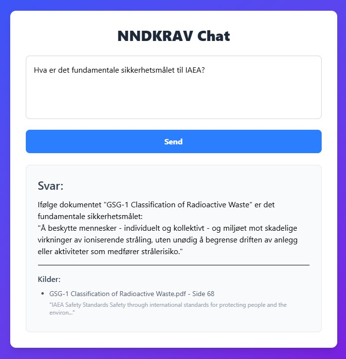

KI i studiene
Privatlæreren som aldri går hjem
Husein Alkhastov brukte KI som privatlærer gjennom hele bachelorstudiet, og avsluttet med å bygge en KI-chatbot selv. For ham handler grensen mellom hjelp og juks om en ting: om du lærer noe.
Det klikket ikke. Husein hadde lest om grafalgoritmer i læreboka, men skjønte fortsatt ikke hvorfor Dijkstras algoritme ikke fungerer når grafen har negative kanter. En obligatorisk oppgave ventet.
- Så jeg spurte Claude om å forklare det med et lite eksempel, og da skjønte jeg det på typ fem minutter. Koden skrev jeg selv, men jeg brukte KI til å forstå teorien bak, forteller han.
Husein har fullført bachelorgraden ved Fakultet for informasjonsteknologi, ingeniørfag og økonomi på Høgskolen i Østfold (HiØ). Gjennom studiet brukte han KI ganske mye. Mest ChatGPT, men etter hvert Claude til koding, fordi han synes den forklarer bedre. Verktøyene forklarte stoff han ikke skjønte fra forelesning, fant feil i koden og laget øvingsoppgaver før eksamen.
Fra bruker til utvikler
KI ble også temaet for bacheloroppgaven. Sammen med fire medstudenter utviklet Husein NNDKRAV, en prototype for Norsk nukleær dekommisjonering i Halden. Etaten rydder opp etter norsk atomvirksomhet og må holde orden på store mengder krav fra lover og forskrifter.
Chatboten henter ut krav fra dokumentene og svarer med kildehenvisning, slik at brukeren kan sjekke hvor svaret kommer fra.

Langt fra alene
Husein er ikke noe unntak. I Teknas studentundersøkelse fra 2024 svarte halvparten av nesten 3900 teknologistudenter at de bruker KI flere ganger i uken. Ytterligere 26 prosent bruker det ukentlig. 64 prosent bruker KI til å skrive kode, og 61 prosent til å få forklart pensum.
Hvor ofte bruker teknologistudenter KI?
- Flere ganger i uken50 %
- Ukentlig26 %
- Månedlig12 %
- Sjeldnere6 %
- Bruker ikke KI5 %
Hvor går grensen?
For Husein er skillet mellom hjelpemiddel og juks enkelt.
- For meg går grensen ved om du lærer noe eller ikke. Hvis du bruker det som en privatlærer som forklarer ting, er det et hjelpemiddel. Hvis du limer inn oppgaven og leverer det den spytter ut, er det juks, selv om ingen oppdager det. Litt som forskjellen på å spørre en kompis om hjelp og å kopiere besvarelsen hans, sier han.
"For meg går grensen ved om du lærer noe eller ikke."
Reglene er mindre enkle. Ifølge Husein er KI ikke lov på skoleeksamen med mindre det står eksplisitt, mens reglene for obligatoriske oppgaver og hjemmeeksamen varierer fra emne til emne. Noen emner tillater det så lenge du oppgir det, andre forbyr det helt.
- Ærlig talt tror jeg mange studenter ikke sjekker reglene for hvert emne så nøye som de burde.
Tekna-undersøkelsen peker samme vei: 43 prosent mener retningslinjene for KI på eksamen ikke er tydelige nok, og 11 prosent har brukt KI på oppgaver der det ikke var angitt at det var lov.
Hjelp eller krykke?
KI gjør det mye lettere å komme seg videre når man står fast, mener Husein, særlig sent på kvelden når ingen gruppelærere er tilgjengelige. Men det har en pris.
- Jeg merker selv at hvis jeg bruker det for mye, så blir jeg dårligere til å feilsøke på egen hånd. Og på skoleeksamen har du jo ikke KI, så da blir du straffet hvis du har lent deg for mye på det.
Rådet hans er kort:
- Man må være litt disiplinert.
Kilder
- Intervju med Husein Alkhastov over Discord.
- Høgskolen i Østfold, EXPO 2025: NNDKRAV (B25ITK14)
- Tekna (2024): Studenters bruk av og holdninger til kunstig intelligens i utdanningen